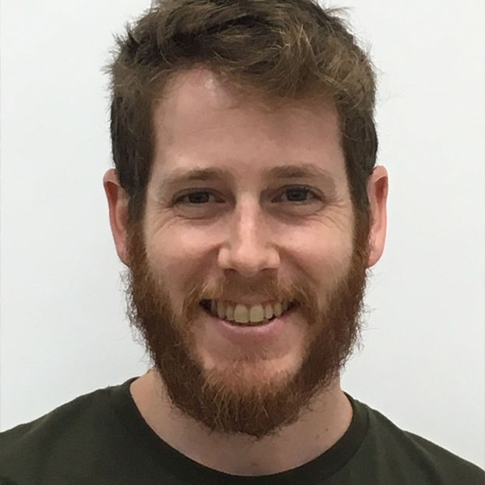

Tom Rabinowitz, MD-PhD
Principal investigator
Physician-scientist. MD-PhD in Computational Genomics, Tel Aviv University; co-founder and former CTO of Identifai Genetics Ltd., a medical startup for prenatal testing. Currently a pediatric resident at Dana-Dwek Children's Hospital, and forming a new computational research team under the Genetics Institute and Genomics Center at Tel Aviv Sourasky University Medical Center. Works on omics data, statistics, machine and deep learning, genomic foundation models and DNA language models, to solve problems in genomics, cell-free DNA-based noninvasive testing, variant effect prediction, and clinical implementation of omics-based insights.